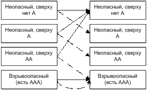
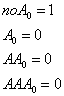
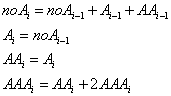
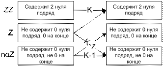
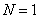
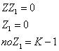
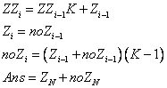

Динамическое программирование: простейшие задачи
Решение всех задач основано на методе математической индукции (ММИ).
Математическая индукция - один из методов математического доказательства, используется чтобы доказать истинность некоторого утверждения для всех натуральных чисел.
Для этого сначала проверяется истинность утверждения с номером 1 — база (базис) индукции, а затем доказывается, что, если верно утверждение с номером $n$, то верно и следующее утверждение с номером $n + 1$ — шаг индукции, или индукционный переход.
Для решения нужно найти базу индукции и общий шаг (индукционный переход). Как правило, общий шаг найти сложнее, поэтому при решении задач следует начать с поиска общего шага.
Часто формулу можно составить из параметров заданных в условии. В более сложных случаях требуется ввести новую переменную и построить индукцию по этой переменной.
Задача: Числа Фибоначчи
Вычислить $N$-ое число в последовательности Фибоначчи, — 1, 1, 2, 3, 5, 8, … — в которой первые два члена равны единице, а все остальные представляют собой сумму двух предыдущих.
Входные данные: Одно число $1 \le N \le 70$.
Выходные данные: Одно число — $N$-ый член последовательности.
Решение: Выпишем условие задачи в виде формул: $F_1=1$, $F_2=2$, $F_i=F_{i-1}+F_{i-2}, i \ge 3$.
const MaxN = 70;
var i,N : Integer;
F : Array [1..MaxN] of Int64; { Массив для хранения вычисленных значений F }
begin
{ Чтение входных данных }
Read(N);
{ Проверка корректности входных данных }
assert( (1 <= N) and (N <= MaxN) );
{ Инициализация "динамики", первые 2 значения F }
F[1]:=1; F[2]:=1;
{ Общий шаг динамики: в цикле вычисляем значения F }
for i:=3 to N do
F[i] := F[i-1] + F[i-2];
{ Вывод результата }
write(F[N]);
end.
Решение на языке Python с использованием словаря:
def F(i):
S = {}
S[1] = 1
S[2] = 1
j = 3
while j <= i:
S[j] = S[j-1] + S[j-2]
j += 1
return S[i]
Реализация на C++
// Числа Фибоначчи, динамика снизу вверх: O(N) по времени, O(N) по памяти.
#include <cstddef>
#include <cstdio>
#include <vector>
// N-е число Фибоначчи: F(1) = F(2) = 1, F(i) = F(i-1) + F(i-2).
unsigned long long fibonacci(std::size_t n) {
// f[i] - i-е число; f[0] в задаче не нужно, f[1] и f[2] - база динамики.
std::vector<unsigned long long> f = {0, 1, 1};
for (std::size_t i = 3; i <= n; ++i) {
f.push_back(f[i - 1] + f[i - 2]);
}
return f[n];
}
int main() {
std::printf("F(10) = %llu\n", fibonacci(10));
std::printf("F(70) = %llu\n", fibonacci(70));
return 0;
}
Реализация на Rust
// Числа Фибоначчи, динамика снизу вверх: O(N) по времени, O(N) по памяти.
/// N-е число Фибоначчи: F(1) = F(2) = 1, F(i) = F(i-1) + F(i-2).
pub fn fibonacci(n: usize) -> u64 {
// f[i] - i-е число; f[0] в задаче не нужно, f[1] и f[2] - база динамики.
let mut f: Vec<u64> = vec![0, 1, 1];
for i in 3..=n {
let next = f[i - 1] + f[i - 2];
f.push(next);
}
f[n]
}
fn main() {
println!("F(10) = {}", fibonacci(10));
println!("F(70) = {}", fibonacci(70));
}
Мячик на лесенке
На вершине лесенки, содержащей $N$ ступенек, находится мячик, который начинает прыгать по ним вниз, к основанию.
Мячик может прыгнуть на следующую ступеньку, на ступеньку через одну или через 2. (То есть, если мячик лежит на 8-ой
ступеньке, то он может переместиться на 5-ую, 6-ую или 7-ую.).
Определить число всевозможных "маршрутов" мячика с вершины на землю.
Входные данные: Одно число $1 \le N \le 40$.
Выходные данные: Одно число — количество маршрутов.
| Входной файл | Выходной файл |
|---|---|
| 4 | 7 |
| 39 | 12960201916 |
| 13 | 1705 |
Решение:
$D_i$ - количество всевозможных способов попасть на $i$-ую ступеньку.
$D_1=1$ - только один способ попасть на первую ступеньку.
$D_2=2$ - попасть на 2-ую можно 2-мя способами: прыгнув на неё сразу или прыгнув с 1-ой ступеньки.
$D_3=4$ - попасть на 3-ую можно 4-мя способами:
1) прыгнув на неё сразу
2) прыгнув на 1-ую, потом на 3-ю
3) прыгнув на 2-ую, потом на 3-ю
3) прыгнув на 1-ую ступеньку, потом на 2-ую, потом на 3-ю.
$D_i=D_{i-1}+D_{i-2}+D_{i-3}, i \ge 4$ - на ступеньки начиная с 4-ой можно попасть с 3-х предыдущих.
Мы знаем, сколькими способами можно попасть на каждую ступеньку из предыдущих.
Общий принцип: Количество вариантов как попасть в какое-то состояние равно сумме количеств вариантов как попасть в предыдущие состояния.
var I,N : Integer;
D : array [1..40] of Int64;
begin
read(N);
D[1]:=1; D[2]:=2; D[3]:=4;
for I:=4 to N do
D[I] := D[I-1] + D[I-2] + D[I-3];
writeln(D[N])
end.
Реализация на Python
# Мячик на лесенке, динамика: D[i] = D[i-1] + D[i-2] + D[i-3], O(N) по времени и по памяти.
def ball_routes(n: int) -> int:
# ways[i] - число способов попасть на ступеньку i (нумерация снизу вверх), ways[0] не используется.
ways = [0, 1, 2, 4] # базовые значения для первых трёх ступенек
if n < len(ways):
return ways[n]
for i in range(4, n + 1):
ways.append(ways[i - 1] + ways[i - 2] + ways[i - 3])
return ways[n]
def main() -> None:
for n in (4, 13, 39):
print(f"N = {n}: маршрутов {ball_routes(n)}")
if __name__ == "__main__":
main()
Реализация на C++
// Мячик на лесенке, динамика: D[i] = D[i-1] + D[i-2] + D[i-3], O(N) по времени и по памяти.
#include <cstddef>
#include <cstdio>
#include <vector>
// Число маршрутов мячика с вершины лесенки из n ступенек на землю.
unsigned long long ball_routes(std::size_t n) {
// ways[i] - число способов попасть на ступеньку i (нумерация снизу вверх), ways[0] не используется.
std::vector<unsigned long long> ways = {0, 1, 2, 4}; // базовые значения для первых трёх ступенек
if (n < ways.size()) {
return ways[n];
}
for (std::size_t i = 4; i <= n; ++i) {
ways.push_back(ways[i - 1] + ways[i - 2] + ways[i - 3]);
}
return ways[n];
}
int main() {
const std::size_t tests[] = {4, 13, 39};
for (std::size_t n : tests) {
std::printf("N = %zu: маршрутов %llu\n", n, ball_routes(n));
}
return 0;
}
Реализация на Rust
// Мячик на лесенке, динамика: D[i] = D[i-1] + D[i-2] + D[i-3], O(N) по времени и по памяти.
/// Число маршрутов мячика с вершины лесенки из n ступенек на землю.
pub fn ball_routes(n: usize) -> u64 {
// ways[i] - число способов попасть на ступеньку i (нумерация снизу вверх), ways[0] не используется.
let mut ways: Vec<u64> = vec![0, 1, 2, 4]; // базовые значения для первых трёх ступенек
if n < ways.len() {
return ways[n];
}
for i in 4..=n {
let next = ways[i - 1] + ways[i - 2] + ways[i - 3];
ways.push(next);
}
ways[n]
}
fn main() {
for n in [4, 13, 39] {
println!("N = {}: маршрутов {}", n, ball_routes(n));
}
}
Черепашка
На квадратной доске расставлены целые числа. Черепашка, находящаяся в левом верхнем углу, мечтает
попасть в правый нижний. При этом она может переползать только в клетку справа или снизу и хочет, чтобы сумма всех
чисел, оказавшихся у нее на пути, была бы максимальной. Определить эту сумму.
Входные данные:
Первая строка — $N$ — размер доски $(1 \le N \le 50)$.
Далее следует $N$ строк, каждая из которых содержит $N$ целых чисел,
представляющие доску $(0 \le A_{ij} \le 10^9)$.
Выходные данные: Одно число — максимальная сумма.
| Входной файл | Выходной файл |
3 |
16 |
Решение:
Обозначим: $S_{ij}$ - максимальная набранная сумма, если черепашка находится в клетке $i,j$.
Индукционный переход: $S_{ij}=max(S_{i-1,j},S_{i,j-1})+A_{ij}$ - черепашка может прийти в клетку $(i;j)$ сверху - из клетки $(i-1;j)$, или слева - из клетки $(i;j-1)$
База: $S_{i0} = 0$; $S_{0j} = 0$ - искусственно добавляем нулевой столбец и строку.
Ответ: $S_{NN}$
{$APPTYPE CONSOLE}
uses SysUtils, Math;
var
A: array [1 .. 50, 1 .. 50] of int64;
S: array [0 .. 50, 0 .. 50] of int64;
i, j, N: integer;
begin
Assign(Input, 'turtle.in'); Reset(Input);
Assign(Output, 'turtle.out'); Rewrite(Output);
{ Чтение исходных данных }
read(N);
for i := 1 to N do
for j := 1 to N do
read(A[i,j]);
{ Инициализация динамики }
for i := 0 to N do begin
S[i,0] := 0;
S[0,i] := 0
end;
{ Общий шаг }
for i := 1 to N do
for j := 1 to N do
S[i,j] := max( S[i-1,j], S[i,j-1] ) + A[i,j];
{ Вывод ответа }
writeln(S[N,N]);
end.
Реализация на Python
# Черепашка, динамика по клеткам (ходы вправо и вниз): O(N^2) по времени и по памяти.
def max_path_sum(board: list[list[int]]) -> int:
n = len(board)
# best[i][j] - максимум суммы пути из (0, 0) в клетку (i, j), нумерация с 1.
# Нулевые строка и столбец - граница; она не портит ответ, так как все числа неотрицательны.
best = [[0] * (n + 1) for _ in range(n + 1)]
for i in range(1, n + 1):
for j in range(1, n + 1):
best[i][j] = max(best[i - 1][j], best[i][j - 1]) + board[i - 1][j - 1]
return best[n][n]
def main() -> None:
board = [
[2, 6, 0],
[5, 0, 6],
[4, 1, 2],
]
print(f"Максимальная сумма: {max_path_sum(board)}")
if __name__ == "__main__":
main()
Реализация на C++
// Черепашка, динамика по клеткам (ходы вправо и вниз): O(N^2) по времени и по памяти.
#include <algorithm>
#include <cstddef>
#include <cstdio>
#include <vector>
// Максимальная сумма чисел на пути из левого верхнего угла в правый нижний.
long long max_path_sum(const std::vector<std::vector<long long>>& board) {
const std::size_t n = board.size();
// best[i][j] - максимум суммы пути в клетку (i, j), нумерация с 1.
// Нулевые строка и столбец - граница; она не портит ответ, так как все числа неотрицательны.
std::vector<std::vector<long long>> best(n + 1, std::vector<long long>(n + 1, 0));
for (std::size_t i = 1; i <= n; ++i) {
for (std::size_t j = 1; j <= n; ++j) {
best[i][j] = std::max(best[i - 1][j], best[i][j - 1]) + board[i - 1][j - 1];
}
}
return best[n][n];
}
int main() {
const std::vector<std::vector<long long>> board = {
{2, 6, 0},
{5, 0, 6},
{4, 1, 2},
};
std::printf("Максимальная сумма: %lld\n", max_path_sum(board));
return 0;
}
Реализация на Rust
// Черепашка, динамика по клеткам (ходы вправо и вниз): O(N^2) по времени и по памяти.
/// Максимальная сумма чисел на пути из левого верхнего угла в правый нижний.
pub fn max_path_sum(board: &[Vec<u64>]) -> u64 {
let n = board.len();
// best[i][j] - максимум суммы пути в клетку (i, j), нумерация с 1.
// Нулевые строка и столбец - граница; она не портит ответ, так как все числа неотрицательны.
let mut best = vec![vec![0u64; n + 1]; n + 1];
for i in 1..=n {
for j in 1..=n {
best[i][j] = best[i - 1][j].max(best[i][j - 1]) + board[i - 1][j - 1];
}
}
best[n][n]
}
fn main() {
let board: Vec<Vec<u64>> = vec![vec![2, 6, 0], vec![5, 0, 6], vec![4, 1, 2]];
println!("Максимальная сумма: {}", max_path_sum(&board));
}
Задача: Робот
В исследовательской лаборатории фирмы Robots&Co разработали новую модель робота. Главной особенностью данной модели робота является то, что он работает по заранее заданной программе, в которой могут присутствовать команды: сделать шаг на Юг, на Север, на Восток или на Запад. Робот исполняет программу строго последовательно и, дойдя до конца программы, останавливается. Специалисты из Robots&Co заинтересовались вопросом, сколько существует различных программ, состоящих из K инструкций, таких, что робот, выйдя из начала координат, придет в точку с координатами (X, Y). Оси координат располагаются параллельно сторонам света, и единица измерения, соответствует одному шагу робота. Напишите программу, которая дает ответ на этот вопрос.
Входные данные:
Во входном файле находятся три числа $K$, $X$ и $Y$ ($0 \le K \le 16$, $|X|$, $|Y| \le 16$), разделенные
пробелами.
Выходные данные: В выходной файл ваша программа должна поместить одно число — количество программ для робота.
| Вход | Выход |
| 5 -2 -3 | 10 |
| 16 16 15 | 0 |
| 16 3 3 | 56216160 |
Решение:
$F_{k,x,y}$ - количество программ из $k$ инструкций, таких, что робот, выйдя из начала координат, придет в точку с
координатами $(x, y)$
Общий шаг: $F_{k,x,y}=F_{k-1,x-1,y}+F_{k-1,x+1,y}+F_{k-1,x,y-1}+F_{k-1,x,y+1}$
Инициализация: $F_{0,x,y} = 0$, кроме $F_{0,0,0} = 1$.
Ответ: $F_{KXY}$
Реализация на Python
# Робот: число программ из k команд, приводящих в точку (x, y). Динамика по числу команд: O(k^3) по времени, O(k^2) по памяти.
# Команды робота: шаг на восток, на запад, на север и на юг.
STEPS = ((1, 0), (-1, 0), (0, 1), (0, -1))
def robot_programs(k: int, x: int, y: int) -> int:
# ways[(a, b)] - число программ длины i, после которых робот стоит в точке (a, b).
# При i = 0 робот стоит в начале координат, и есть одна пустая программа.
ways = {(0, 0): 1}
for _ in range(k):
# Каждая программа длины i продолжается одной командой и даёт программу длины i + 1.
next_ways: dict[tuple[int, int], int] = {}
for (a, b), count in ways.items():
for dx, dy in STEPS:
cell = (a + dx, b + dy)
next_ways[cell] = next_ways.get(cell, 0) + count
ways = next_ways
return ways.get((x, y), 0)
def main() -> None:
print(f"K = 5, X = -2, Y = -3: {robot_programs(5, -2, -3)}")
print(f"K = 16, X = 16, Y = 15: {robot_programs(16, 16, 15)}")
print(f"K = 16, X = 3, Y = 3: {robot_programs(16, 3, 3)}")
if __name__ == "__main__":
main()
Реализация на C++
// Робот: число программ из k команд, приводящих в клетку (x, y). Динамика по числу команд: O(k^3 log k) по времени, O(k^2) по памяти.
#include <cstdio>
#include <map>
#include <utility>
// Сдвиги команд: восток, запад, север, юг.
const int kDx[4] = {1, -1, 0, 0};
const int kDy[4] = {0, 0, 1, -1};
// Число программ длины k, после которых робот стоит в клетке (x, y).
unsigned long long robot_programs(int k, int x, int y) {
// ways[{a, b}] - число программ длины i, после которых робот стоит в клетке (a, b).
std::map<std::pair<int, int>, unsigned long long> ways = {{{0, 0}, 1}};
for (int step = 0; step < k; ++step) {
// Каждая программа длины step продолжается одной командой и даёт программу длины step + 1.
std::map<std::pair<int, int>, unsigned long long> next;
for (const auto& [cell, count] : ways) {
for (int d = 0; d < 4; ++d) {
next[{cell.first + kDx[d], cell.second + kDy[d]}] += count;
}
}
ways = std::move(next);
}
const auto found = ways.find({x, y});
return found == ways.end() ? 0 : found->second;
}
int main() {
std::printf("K = 5, X = -2, Y = -3: %llu\n", robot_programs(5, -2, -3));
std::printf("K = 16, X = 16, Y = 15: %llu\n", robot_programs(16, 16, 15));
std::printf("K = 16, X = 3, Y = 3: %llu\n", robot_programs(16, 3, 3));
return 0;
}
Реализация на Rust
// Робот: число программ из k команд, приводящих в клетку (x, y). Динамика по числу команд: O(k^3) по времени, O(k^2) по памяти.
use std::collections::HashMap;
/// Сдвиги команд: восток, запад, север, юг.
const STEPS: [(i32, i32); 4] = [(1, 0), (-1, 0), (0, 1), (0, -1)];
/// Число программ длины k, после которых робот стоит в клетке (x, y).
pub fn robot_programs(k: usize, x: i32, y: i32) -> u64 {
// ways[(a, b)] - число программ длины i, после которых робот стоит в клетке (a, b).
let mut ways: HashMap<(i32, i32), u64> = HashMap::new();
ways.insert((0, 0), 1);
for _ in 0..k {
// Каждая программа длины i продолжается одной командой и даёт программу длины i + 1.
let mut next: HashMap<(i32, i32), u64> = HashMap::new();
for (&(a, b), &count) in &ways {
for (dx, dy) in STEPS {
*next.entry((a + dx, b + dy)).or_insert(0) += count;
}
}
ways = next;
}
ways.get(&(x, y)).copied().unwrap_or(0)
}
fn main() {
println!("K = 5, X = -2, Y = -3: {}", robot_programs(5, -2, -3));
println!("K = 16, X = 16, Y = 15: {}", robot_programs(16, 16, 15));
println!("K = 16, X = 3, Y = 3: {}", robot_programs(16, 3, 3));
}
Взрывоопасность
При переработке радиоактивных материалов образуются отходы двух видов — особо опасные (тип A) и неопасные (тип B). Для их хранения используются одинаковые контейнеры. После помещения отходов в контейнеры, последние укладываются вертикальной стопкой. Стопка считается взрывоопасной, если в ней подряд идет более двух контейнеров типа A. Для заданного количества контейнеров N определить число безопасных стопок.Входные данные:
Одно число $1 \le N \le 30$.
Выходные данные:
Одно число — количество безопасных вариантов формирования стопки.
f.in |
f.out |
5 |
24 |
Решение:
 |
 |
 |
Реализация на Python
# Взрывоопасность: число безопасных стопок из n контейнеров (без трёх контейнеров A подряд). Динамика: O(n) по времени, O(1) по памяти.
def safe_stacks(n: int) -> int:
# Состояние стопки - сколько контейнеров A стоит сверху подряд: 0, 1 или 2 (три подряд - взрывоопасно, не считаем).
# no_a - стопки без A сверху (в том числе пустая), one_a - с одной A сверху, two_a - с двумя A сверху.
no_a, one_a, two_a = 1, 0, 0
for _ in range(n):
# Контейнер B сводит счётчик A к нулю, контейнер A увеличивает его на единицу.
no_a, one_a, two_a = no_a + one_a + two_a, no_a, one_a
return no_a + one_a + two_a
def main() -> None:
for n in range(1, 6):
print(f"N = {n}: безопасных стопок {safe_stacks(n)}")
print(f"N = 30: безопасных стопок {safe_stacks(30)}")
if __name__ == "__main__":
main()
Реализация на C++
// Взрывоопасность: число безопасных стопок из n контейнеров (без трёх контейнеров A подряд). Динамика: O(n) по времени, O(1) по памяти.
#include <cstdio>
// Число безопасных стопок из n контейнеров.
unsigned long long safe_stacks(int n) {
// no_a - стопки без A сверху (в том числе пустая), one_a - с одной A сверху, two_a - с двумя A сверху.
unsigned long long no_a = 1;
unsigned long long one_a = 0;
unsigned long long two_a = 0;
for (int i = 0; i < n; ++i) {
// Контейнер B сводит счётчик A к нулю, контейнер A увеличивает его на единицу.
const unsigned long long after_b = no_a + one_a + two_a;
two_a = one_a;
one_a = no_a;
no_a = after_b;
}
return no_a + one_a + two_a;
}
int main() {
for (int n = 1; n <= 5; ++n) {
std::printf("N = %d: безопасных стопок %llu\n", n, safe_stacks(n));
}
std::printf("N = 30: безопасных стопок %llu\n", safe_stacks(30));
return 0;
}
Реализация на Rust
// Взрывоопасность: число безопасных стопок из n контейнеров (без трёх контейнеров A подряд). Динамика: O(n) по времени, O(1) по памяти.
/// Число безопасных стопок из n контейнеров.
pub fn safe_stacks(n: usize) -> u64 {
// no_a - стопки без A сверху (в том числе пустая), one_a - с одной A сверху, two_a - с двумя A сверху.
let (mut no_a, mut one_a, mut two_a) = (1u64, 0u64, 0u64);
for _ in 0..n {
// Контейнер B сводит счётчик A к нулю, контейнер A увеличивает его на единицу.
(no_a, one_a, two_a) = (no_a + one_a + two_a, no_a, one_a);
}
no_a + one_a + two_a
}
fn main() {
for n in 1..=5 {
println!("N = {}: безопасных стопок {}", n, safe_stacks(n));
}
println!("N = 30: безопасных стопок {}", safe_stacks(30));
}
К-ичные числа
Требуется вычислить количество N-значных чисел в системе счисления с основанием K, таких, что их запись не содержит
двух подряд идущих нулей. $(2 \le K \le 10, N + K \le 18)$.
Входные данные:
Числа N и K в десятичной записи, разделенные пробелом или переводом строки.
Выходные данные:
Искомое число в десятичной записи.
g.in |
g.out |
4 3 |
44 |
5 2 |
8 |
Решение:

Для

будет:
Динамический переход:

Реализация на Python
# К-ичные числа: число n-значных записей в основании k без двух нулей подряд. Динамика по последней цифре: O(n) по времени, O(1) по памяти.
def k_ary_numbers(n: int, k: int) -> int:
if n == 0:
return 0
# zero_end - записи длины i, оканчивающиеся нулём; digit_end - оканчивающиеся ненулевой цифрой.
# Первая цифра не может быть нулём: для длины 1 есть k - 1 записей, все оканчиваются ненулевой цифрой.
zero_end, digit_end = 0, k - 1
for _ in range(n - 1):
# Ноль можно дописать только после ненулевой цифры, ненулевую (k - 1 вариант) - после любой записи.
zero_end, digit_end = digit_end, (k - 1) * (zero_end + digit_end)
return zero_end + digit_end
def main() -> None:
print(f"N = 4, K = 3: {k_ary_numbers(4, 3)}")
print(f"N = 5, K = 2: {k_ary_numbers(5, 2)}")
print(f"N = 8, K = 10: {k_ary_numbers(8, 10)}")
if __name__ == "__main__":
main()
Реализация на C++
// К-ичные числа: число n-значных записей в основании k без двух нулей подряд. Динамика по последней цифре: O(n) по времени, O(1) по памяти.
#include <cstdio>
// Число n-значных записей в основании k без двух нулей подряд (первая цифра не ноль).
unsigned long long k_ary_numbers(int n, int k) {
if (n == 0) {
return 0;
}
const auto nonzero = static_cast<unsigned long long>(k - 1); // ненулевых цифр в основании k
// zero_end - записи длины i, оканчивающиеся нулём; digit_end - оканчивающиеся ненулевой цифрой.
unsigned long long zero_end = 0;
unsigned long long digit_end = nonzero; // длина 1: первая цифра ненулевая
for (int i = 1; i < n; ++i) {
// Ноль ставим только после ненулевой цифры, ненулевую - после любой записи.
const unsigned long long next_zero_end = digit_end;
digit_end = nonzero * (zero_end + digit_end);
zero_end = next_zero_end;
}
return zero_end + digit_end;
}
int main() {
std::printf("N = 4, K = 3: %llu\n", k_ary_numbers(4, 3));
std::printf("N = 5, K = 2: %llu\n", k_ary_numbers(5, 2));
std::printf("N = 8, K = 10: %llu\n", k_ary_numbers(8, 10));
return 0;
}
Реализация на Rust
// К-ичные числа: число n-значных записей в основании k без двух нулей подряд. Динамика по последней цифре: O(n) по времени, O(1) по памяти.
/// Число n-значных записей в основании k без двух нулей подряд (первая цифра не ноль).
pub fn k_ary_numbers(n: usize, k: u64) -> u64 {
if n == 0 {
return 0;
}
let nonzero = k - 1; // ненулевых цифр в основании k
// zero_end - записи длины i, оканчивающиеся нулём; digit_end - оканчивающиеся ненулевой цифрой.
let (mut zero_end, mut digit_end) = (0u64, nonzero); // длина 1: первая цифра ненулевая
for _ in 1..n {
// Ноль ставим только после ненулевой цифры, ненулевую - после любой записи.
(zero_end, digit_end) = (digit_end, nonzero * (zero_end + digit_end));
}
zero_end + digit_end
}
fn main() {
println!("N = 4, K = 3: {}", k_ary_numbers(4, 3));
println!("N = 5, K = 2: {}", k_ary_numbers(5, 2));
println!("N = 8, K = 10: {}", k_ary_numbers(8, 10));
}
Паровозики
N локомотивов, имеющих номера от 1 до $N$ и установленных на железнодорожную колею, начинают двигаться в одну
сторону,
причем локомотив номер $k$ изначально движется со скоростью $k$ км/ч. Если локомотив, движущийся с большей
скоростью,
нагоняет более медленный локомотив, дальше они движутся один за другим со скоростью впереди идущего локомотива.
Очевидно, через некоторое время после начала движения локомотивы разобьются на несколько групп, движущихся с разной
скоростью.
Написать программу, определяющую, сколько начальных расстановок $s$ из $N!$ возможных дадут в результате p групп
движущихся локомотивов.
Входные данные:
Два числа — $1 \le N \le 16$ и $1 \le p \le N$.
Выходные данные:
Одно число — $s$.
h.in |
h.out |
4 2 |
11 |
5 4 |
10 |
6 6 |
1 |
uses SysUtils;
const Nmax=16;
var
Save : array [1..nmax,1..nmax,1..nmax] of Int64;
function F( i,n,p:byte; x:integer ):Int64;
{ i-ый паровоз впереди,
n паровозов всего
p групп }
var j:byte;
begin
if Save[i,n,p]=-1 then begin
if x=0 then writeln( Format('F(i=%d,n=%d,p=%d)=',[i,n,p] ) );
Result := 0;
{ Рассмотрим, как может i-ый паровозик оказаться впереди }
{ При этом есть 2 варианта: }
{ 1. Он уйдёт вперёд и образует новую группу }
{ Т.е. он быстрее предыдущего паровозика }
{ Пусть предыдущий едет со скоростью j }
{ Мы могли получить это из ситуации:
j in [1..i-1]
n-1 паровоз всего;
p-1 группа всего;
т.е. новый паровоз образовал новую группу }
for j:=1 to i-1 do begin
Result := Result + F(j,n-1,p-1,x+1);
if x = 0 then writeln( Format(' + F(i=%d,n=%d,p=%d)=%d',[j,n-1,p-1,F(j,n-1,p-1,x+1)] ) );
end;
{ i-ый не образует новую группу, т.е. j>i }
for j:=i+1 to n do begin
Result := Result + F(i,n-1,p,x+1);
if x = 0 then writeln( Format(' + F(i=%d,n=%d,p=%d)=%d *',[i,n-1,p,F(i,n-1,p,x+1)] ) );
end;
Save[i,n,p] := Result;
end;
F:=Save[i,n,p];
if (i>n) or (p>n) then
assert( Result = 0 );
end;
var i,j,NN,PP,n,p:byte;
s:Int64;
begin
readln(NN,PP);
for i:=1 to NN do
for n:=1 to NN do
for p:=1 to NN do begin
Save[i,n,p]:=-1;
if (i>n) or (p>n) then Save[i,n,p]:=0;
{ Одна группа - и не первый впереди - не может быть :) }
if (p=1) and (i<>1) then Save[i,n,p]:=0;
{ Кол-во групп = кол-ву паровозов и первый - самый быстрый }
if (n=p) and (i=n) then Save[i,n,p]:=1;
end;
for i:=1 to NN do
for n:=1 to NN do
for p:=1 to NN do begin
if (n=p) and (i<n) then assert( F(i,n,p,1) = 0 );
if i>n then assert( F(i,n,p,1) = 0,
Format('F(%d,%d,%d)=%d',[i,n,p,F(i,n,p,1)]) );
end;
s:=0;
for i:=1 to NN do
s:=s+F(i,NN,PP,1);
writeln(s);
end.
Реализация на Python
# Паровозики: число расстановок n локомотивов, дающих groups групп (числа Стирлинга первого рода). Динамика: O(n^2) по времени и по памяти.
# c(i, k) = c(i - 1, k - 1) + (i - 1) * c(i - 1, k): самый быстрый локомотив либо первый и образует новую группу,
# либо стоит за одним из i - 1 локомотивов и не меняет число групп.
def locomotive_arrangements(n: int, groups: int) -> int:
if not 0 <= groups <= n:
return 0
# stirling[i][k] - число расстановок i локомотивов по k группам.
stirling = [[0] * (n + 1) for _ in range(n + 1)]
stirling[0][0] = 1
for i in range(1, n + 1):
for k in range(1, i + 1):
stirling[i][k] = stirling[i - 1][k - 1] + (i - 1) * stirling[i - 1][k]
return stirling[n][groups]
def main() -> None:
print(f"N = 4, p = 2: {locomotive_arrangements(4, 2)}")
print(f"N = 5, p = 4: {locomotive_arrangements(5, 4)}")
print(f"N = 6, p = 6: {locomotive_arrangements(6, 6)}")
print(f"N = 16, p = 1: {locomotive_arrangements(16, 1)}")
if __name__ == "__main__":
main()
Реализация на C++
// Паровозики: число расстановок n локомотивов, дающих groups групп (числа Стирлинга первого рода). Динамика: O(n^2) по времени и по памяти.
#include <cstddef>
#include <cstdio>
#include <vector>
// stirling[i][k] = c(i, k): число расстановок i локомотивов по k группам.
// c(i, k) = c(i - 1, k - 1) + (i - 1) * c(i - 1, k): самый быстрый локомотив либо первый и образует группу,
// либо стоит за одним из i - 1 локомотивов и не меняет число групп.
unsigned long long locomotive_arrangements(std::size_t n, std::size_t groups) {
if (groups > n) {
return 0;
}
std::vector<std::vector<unsigned long long>> stirling(n + 1, std::vector<unsigned long long>(n + 1, 0));
stirling[0][0] = 1;
for (std::size_t i = 1; i <= n; ++i) {
for (std::size_t k = 1; k <= i; ++k) {
stirling[i][k] = stirling[i - 1][k - 1] + static_cast<unsigned long long>(i - 1) * stirling[i - 1][k];
}
}
return stirling[n][groups];
}
int main() {
std::printf("N = 4, p = 2: %llu\n", locomotive_arrangements(4, 2));
std::printf("N = 5, p = 4: %llu\n", locomotive_arrangements(5, 4));
std::printf("N = 6, p = 6: %llu\n", locomotive_arrangements(6, 6));
std::printf("N = 16, p = 1: %llu\n", locomotive_arrangements(16, 1));
return 0;
}
Реализация на Rust
// Паровозики: число расстановок n локомотивов, дающих groups групп (числа Стирлинга первого рода). Динамика: O(n^2) по времени и по памяти.
/// c(i, k) = c(i - 1, k - 1) + (i - 1) * c(i - 1, k): самый быстрый локомотив либо первый и образует группу,
/// либо стоит за одним из i - 1 локомотивов и не меняет число групп.
pub fn locomotive_arrangements(n: usize, groups: usize) -> u64 {
if groups > n {
return 0;
}
// stirling[i][k] - число расстановок i локомотивов по k группам.
let mut stirling = vec![vec![0u64; n + 1]; n + 1];
stirling[0][0] = 1;
for i in 1..=n {
for k in 1..=i {
stirling[i][k] = stirling[i - 1][k - 1] + ((i - 1) as u64) * stirling[i - 1][k];
}
}
stirling[n][groups]
}
fn main() {
println!("N = 4, p = 2: {}", locomotive_arrangements(4, 2));
println!("N = 5, p = 4: {}", locomotive_arrangements(5, 4));
println!("N = 6, p = 6: {}", locomotive_arrangements(6, 6));
println!("N = 16, p = 1: {}", locomotive_arrangements(16, 1));
}